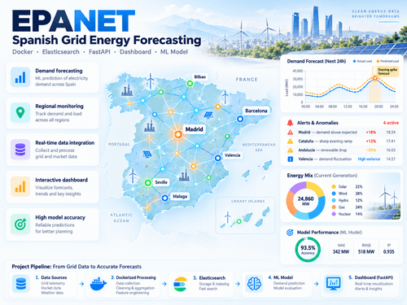
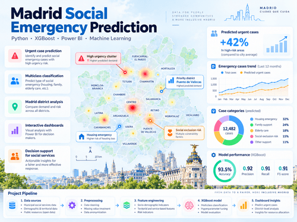
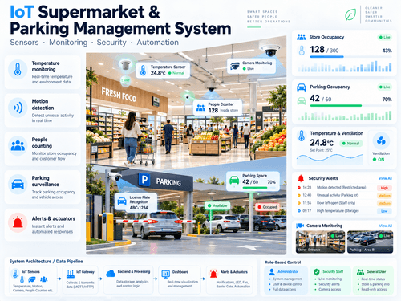

Aplicación de gestión de inventario para almacenes,
desarrollada con una arquitectura backend y frontend.
Permite gestionar existencias y apoyar la planificación
de compras. Este proyecto me permitió profundizar
en el desarrollo de APIs, bases de datos y
procesamiento asíncrono de tareas.
Proyecto de integración y análisis de información
sobre accidentes, radares y tráfico en Madrid.
Desarrollé una base de datos y una API para
consultar los datos. Aprendí a integrar distintas
fuentes y a trabajar con tecnologías de
datos semánticos.
Tecnologías utilizadas
Python
MySQL
FastAPI
RDF y SPARQL
Inteligencia artificial
Agente de inteligencia artificial - ACCIONA
Automatización de procesos empresariales con IA.
Desarrollo de un agente de inteligencia artificial
para automatizar la evaluación preliminar de propuestas
empresariales. El sistema procesa correos electrónicos,
extrae información, identifica datos pendientes y genera
informes. Aprendí a diseñar flujos de trabajo con LLMs,
integrar APIs y gestionar conversaciones automatizadas.
Tecnologías utilizadas:
Python
OpenAI API y LLMs
n8n
Microsoft Graph API
PostgreSQL
Predicción de consumo energético - EPANET

Modelo de predicción basado en datos.
Desarrollo de un sistema de predicción de la demanda de electricidad en la Red Eléctrica española
utilizando
técnicas de machine learning y procesamiento de datos.
El proyecto incluyó la integración de datos,
el entrenamiento de un modelo predictivo y
su conexión con una API y un dashboard.
Aprendí a desarrollar soluciones de machine learning
integradas en aplicaciones reales.
Tecnologías utilizadas:
Python
Machine Learning
Docker
Elasticsearch
Kibana
Análisis de datos
Predicción de emergencias sociales en Madrid

Clasificación de situaciones de urgencia social.
Desarrollo de un modelo de machine learning para
clasificar situaciones de urgencia social a partir
de datos de los Servicios Sociales de Madrid.
El proyecto incluye procesamiento de datos,
tratamiento del desbalanceo de clases,
entrenamiento de modelos multiclase y
visualización de resultados mediante Power BI.
Aprendí a trabajar con datos reales y a
desarrollar modelos predictivos aplicados
a problemas sociales.
Tecnologías utilizadas:
Python
Pandas y Scikit-learn
XGBoost
SMOTE
Power BI
Sistema IoT para supermercados
En curso

Sistema de monitorización y seguridad IoT.
Diseño de un sistema IoT para supervisar un
supermercado y su aparcamiento mediante
sensores de temperatura, movimiento y aforo,
cámaras y actuadores.
El sistema contempla distintos roles de usuario,
gestión de alertas y control de dispositivos
como ventiladores, luces LED y alarmas.
Estoy aprendiendo a definir requisitos,
diseñar casos de uso e integrar dispositivos IoT.
Tecnologías utilizadas:
Internet of Things (IoT)
Sensores y actuadores
Análisis de requisitos
Diseño de sistemas
Cómo trabajo
Análisis del problema:
Identifico los objetivos, necesidades y requisitos del proyecto.
Diseño de la solución:
Defino la arquitectura, las tecnologías y la estructura del sistema.
Selección de herramientas y tecnologías.
Diseño de bases de datos y APIs.
Planificación de las funcionalidades.
Desarrollo:
Implemento las funcionalidades y los componentes del proyecto.
Pruebas y validación:
Compruebo el funcionamiento, detecto errores y realizo mejoras.
Documentación:
Registro las decisiones técnicas, los resultados y las posibles mejoras.